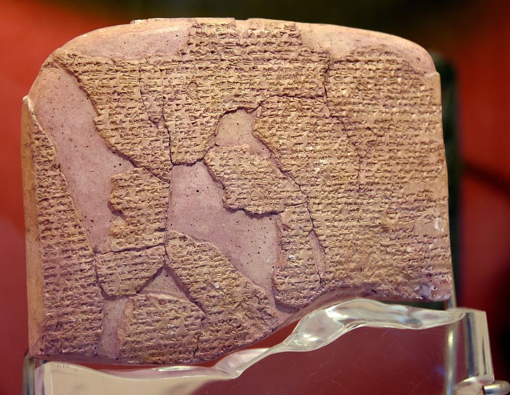
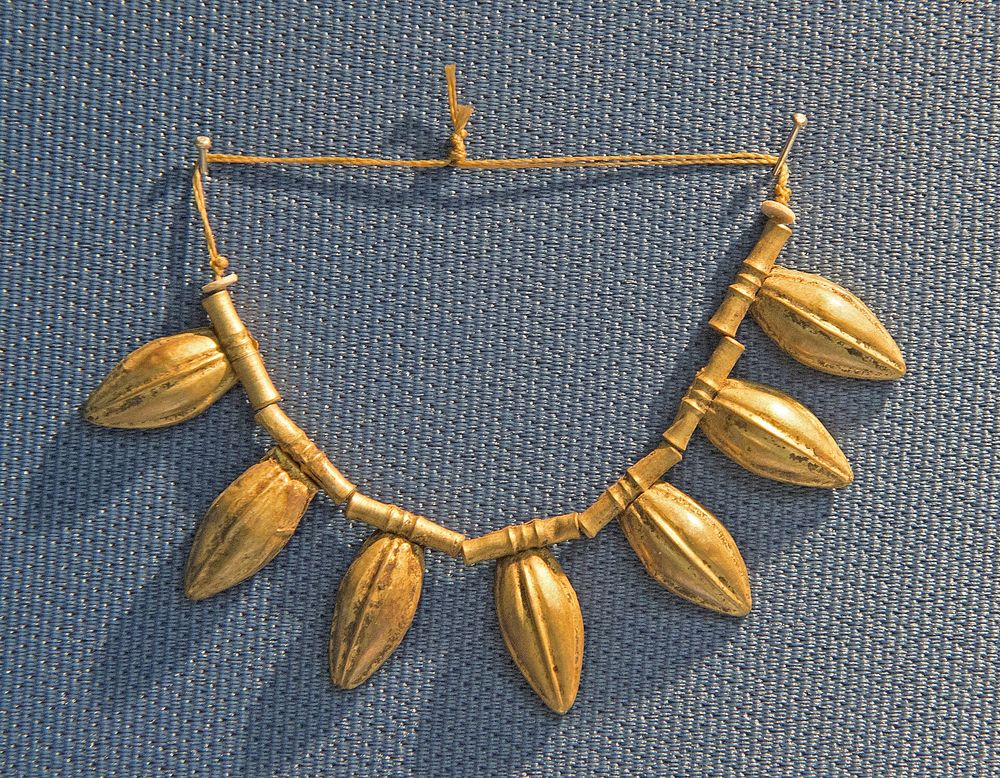
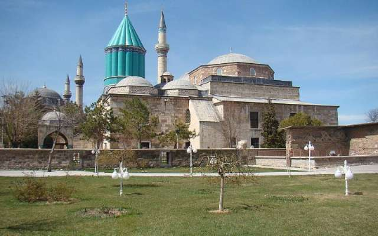
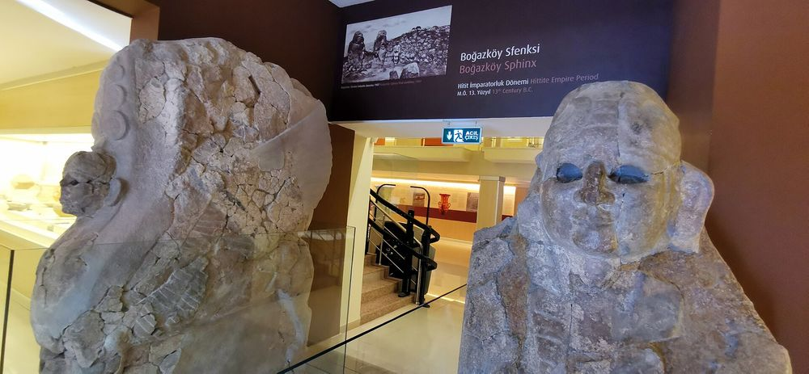

恰塔霍裕克坐姿女像
约公元前6000年
这尊陶制小像表现一位体态丰腴的女性，双手搭在身旁的两只猫科动物上。它于1961年在恰塔霍裕克发掘中出土于一个粮仓，通常被解读为丰饶与力量的象征，是新石器时代安纳托利亚最著名的作品之一。
所在地: 安纳托利亚文明博物馆 · 安卡拉
📷 Dosseman · CC BY-SA 4.0土耳其博物馆中不可错过的杰作：每件作品的故事、年代和所在博物馆。
这尊陶制小像表现一位体态丰腴的女性，双手搭在身旁的两只猫科动物上。它于1961年在恰塔霍裕克发掘中出土于一个粮仓，通常被解读为丰饶与力量的象征，是新石器时代安纳托利亚最著名的作品之一。
所在地: 安纳托利亚文明博物馆 · 安卡拉
📷 Dosseman · CC BY-SA 4.0
出自阿拉加霍裕克王族墓葬的青铜太阳盘和鹿像，是安纳托利亚早期青铜时代金属工艺的杰作。人们认为它们在仪式中被安在杆端举行。太阳盘长期被用作安卡拉和安纳托利亚的象征。
所在地: 安纳托利亚文明博物馆 · 安卡拉
📷 Dosseman · CC BY-SA 4.0
这尊约有1.1万年历史的石灰岩雕像被认为是已知最古老的真人大小人像。它于1993年在尚勒乌尔法的一次施工中被发现，黑曜石眼睛仍保留原位，为了解哥贝克力石阵时代的世界提供了线索。
所在地: 尚勒乌尔法考古博物馆 · 尚勒乌尔法
📷 Immanuelle · CC BY-SA 4.0

这具大理石石棺由奥斯曼·哈姆迪·贝伊于1887年在西顿王家墓地发现，浮雕表现亚历山大大帝的战斗与狩猎场景，并因此得名；它很可能是为西顿国王阿布达洛尼莫斯所制。表面仍可见原始彩绘的痕迹。
所在地: 伊斯坦布尔考古博物馆 · 伊斯坦布尔
📷 Dosseman · CC BY-SA 4.0
这块出土于哈图沙的泥板，是赫梯国王哈图西里三世与埃及法老拉美西斯二世所订条约的赫梯文本，被视为已知最古老的成文和平条约之一。其复制品陈列于纽约联合国总部。
所在地: 伊斯坦布尔考古博物馆 · 伊斯坦布尔
📷 Osama Shukir Muhammed Amin FRCP(Glasg) · CC BY-SA 4.0
这段简短的希伯来文碑文记述了耶路撒冷一条凿岩引水隧道的开凿，1880年被发现，奥斯曼时期运到伊斯坦布尔。它独特地描述了从两端掘进的工人如何在中间会合，是已知最古老的希伯来文碑文之一。
所在地: 伊斯坦布尔考古博物馆 · 伊斯坦布尔
📷 ywpark2003 (Prof. Yong Woo Park) · CC0
这尊1980年出土于佩尔格的罗马大理石雕像，上半身曾被走私出境，在波士顿一家博物馆存放多年。2011年归还土耳其后与下半身重新合璧，成为追索流失文物的象征。
所在地: 安塔利亚博物馆 · 安塔利亚
📷 Carole Raddato · CC BY-SA 2.0



这些大理石浮雕原装饰于阿佛洛狄西亚斯供奉罗马皇帝的塞巴斯蒂恩建筑群，表现皇帝与诸神、英雄并列，被征服的民族则以拟人形象出现。现存的大部分浮雕板陈列在博物馆为其专门修建的大厅中，体现了阿佛洛狄西亚斯雕塑学派的高超技艺。
所在地: 阿佛洛狄西亚博物馆与遗址 · 艾登
📷 Dosseman · CC BY-SA 4.0


贾拉鲁丁·鲁米的墓位于孔亚的象征——绿色瓷砖穹顶之下。陵墓内陈列着覆以刺绣罩布的衣冠棺、珍贵的《玛斯纳维》手抄本以及梅夫拉维教团的乐器和服饰。每年12月的“婚礼之夜”纪念仪式吸引着来自世界各地的访客。
所在地: 梅夫拉纳博物馆 · 科尼亚

赫梯首都哈图沙“斯芬克斯门”的两尊斯芬克斯像中，一尊于1917年被运往德国修复，2011年归还土耳其；另一尊从伊斯坦布尔运来，两尊如今重新并排陈列于博阿兹柯伊博物馆。这对石灰岩雕像是赫梯纪念性艺术的精品。
所在地: 博阿兹柯伊博物馆 · 乔鲁姆
📷 Murat Özsoy 1958 · CC BY-SA 4.0